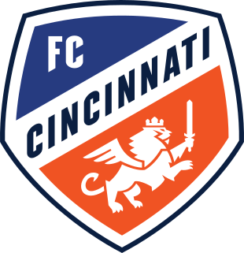

MLS · Soccer
FC Cincinnati
FC Cincinnati started in the USL in 2016 and moved up to Major League Soccer in 2019. In 2027, MLS plays a short Sprint Season from February to May before switching to a summer-to-spring calendar.
- Home
- TQL Stadium
- Season
- February through May (2027 Sprint Season)
- Founded
- 2015
- Trophy case
- 2023 Supporters' Shield
- Team colors
- Orange, blue
2027 Sprint Season Home Matches
Dates and times are subject to change.
February 2027
-
3:00 PM
vs. New York City FC Home opener
TQL Stadium
March 2027
-
4:00 PM
vs. Orlando City SC
TQL Stadium
-
7:00 PM
vs. Nashville SC
TQL Stadium
April 2027
-
7:00 PM
vs. Chicago Fire FC
TQL Stadium
-
7:00 PM
vs. New England Revolution
TQL Stadium
-
7:00 PM
vs. Toronto FC
TQL Stadium
-
5:00 PM
vs. Columbus Crew Hell Is Real derby
TQL Stadium